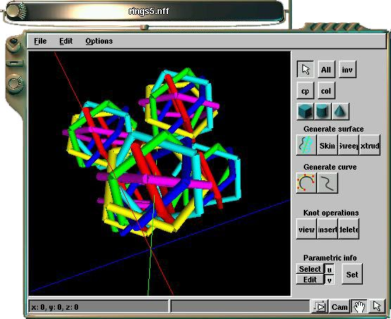

![[LinuxFocus Image]](../../common/May1998/border-short.jpg)
| Noticias Archivos Compañías Consejos |
El paquete de modelado/trazado "Minds Eye"por Martin van Velsen |
Introducción
¿Qué es Minds Eye?
Historia
Diseño
Futuras tecnologías
Utilización
IntroducciónMindsEye está actualmente en fase de desarrollo. La mayor parte del trabajo se realiza bajo la interface. Esto significa que si usted intenta probar las partes actualmente funcionales, estas pueden variar de un día para otro. Nosotros creemos en un buen diseño básico, antes que en dar a los usuarios herramientas con las que jugar .¿Qué es Minds Eye?En la actualidad el mercado del modelado y el rendering está dominado por caros paquetes de software comercial. MindsEye es (o será) la repuesta en freeware (gpl) a un paquete de software que pueda competir con estas versiones comerciales. Cogiendo lo mejor de ambas fuentes y con nuevas técnicas innovativas Minds Eye trata de ser en una plataforma completa para todo tipo de trabajos con gráficos 3DHistoriaHace unos dos años, cuando Linux no era más que un sistema operativo para hackers, surgió la idea de comenzar a trabajar en un programa de render/modelado/animación para Linux. Inspirados por el trabajo de la gente de Gimp, nos pusimos a trabajar para ver si era posible crear otra maravilla similar. Durante un año, más o menos, trabajamos con varias ideas de diseño. En un principio, comenzó de un modo erróneo. Se hicieron buzones a grupos de noticias para ver si había gente interesada en unirse al proyecto. Recibimos montones de repuestas, y parecía que no tendríamos ningún problema para comenzar el proyecto. El nombre, por aquel entonces, era Free-D. Un nombre que fue cambiado posteriormente por Minds Eye, dado que podría haber causado confusiones con el proyecto de las librerías Free 3D. Muy lentamente el proyecto creció. En el camino encontramos obstáculos que no tenían nada que ver con el proyecto. Por ejemplo la gente tenía una idea específica sobre lo que quería ver mejorado. Por lo tanto en nuestra lista de correo, solíamos ver discusiones constantes sobre las especificaciones en el diseño. Tardamos más de un año en producir realmente algo de código.DiseñoLa parte más interesante de Minds Eye es su diseño. Todas las partes son modulares, desde el elemento más pequeño hasta las partes más grandes como el modelador. En el corazón del programa está lo que nosotros denominamos el núcleo de Minds Eye. Esta pieza de software es incapaz de hacer por sí mismo ningún tipo de trabajo gráfico. En lugar de esto, se encarga de manejar todos los módulos y plug-ins. Se podría definir como un gran administrador de recursos. Es también el lugar donde se mantiene la estructura completa de los datos. Hay una diferencia esencial entre un módulo y un plug-in en Minds Eye. Un módulo es un trozo de código, del cual tiene noticia el núcleo. Un módulo puede ser cargado y descargado por el núcleo. Cuando decimos que "tiene noticia de", nos referimos a que el núcleo sabe algo sobre los módulos. Por ejemplo, el módulo de trabajo en red es una puerta que conecta varios núcleos. El módulo de trabajo en red podría ser visto como un módulo tonto que reemplaza a uno de los otros módulos. Hasta el momento hemos definido un conjunto de módulos básicos, que son:
Uno de los módulos es el módulo de animación. Es básicamente un editor 3D especializado en animación. Emplea nuestro gestor de vistas que a su vez usa nuestro código genérico de vistas. Todo nuestro código es modular y puede ser utilizado en otras partes del programa. Como ejemplo, en la pantalla de abajo se pude ver una esbozo del animador, con cuatro vistas.
Para la salida en 3D empleamos OpenGL. Los archivos de instalación asumen que se está empleando MesaGL si se trabaja bajo Linux. El conjunto de herramientas GUI que se puede ver en acción es el QT de TrollTech (http://www.troll.no). Nosotros hemos elegido este kit (biblioteca) porque presenta algunos elementos que necesitábamos y que ningún otro kit podía proporcionarnos (por lo menos al nivel GPL). En el momento que comenzamos, con Gtk no nos sentíamos con la suficiente confianza como para trabajar con él. Además nosotros teníamos necesidades especiales que Gtk no era capaz de satisfacer y Qt sí.
Al igual que los otros programas comerciales, Minds Eye dispondrá de un editor de materiales. Como todas las otras partes el código de este módulo está basado en otro código. Por ejemplo, las ventanas que muestren a los materiales tendrán la misma fuente de luz que las ventanas de diálogo. Están derivadas del código que muestra una esfera de OpenGL con varias propiedades. Las ventanas de vistas sabrán cómo tratar con todas estas propiedades. El editor de materiales sólo tendrá que encargarse del control de todos los materiales y de los datos disponibles en ese momento. Como todas las partes del programa, la filosofía es: divide todas las partes en su forma más básica. Básicamente siguiendo el mismo camino que hizo a Unix del modo que es ahora.
Para la salida de render empleamos... cualquier cosa que encontramos. Algunos programas de renderizar serán usados internamente, como el SIPP. Otros renderizadores serán utilizados como programas externos. Todo depende de la naturaleza y complejidad del sistema sobre el que queramos realizar el render. Si el renderizador de salida es interno, básicamente será cargado como un plug-in. El módulo de render sabrá como tratar con él y le ofrecerá una estructura de datos y un buffer para almacenar la imagen renderizada junto con algunos parámetros. En la actualidad estamos tratando con SIPP, POVRay y con Renderman, como programas de render, pero los desarrolladores no pueden añadirles todo lo que quieren. Como todo lo demás de Minds Eye todos los interfaces tendrán una API bien definida. Futuras TecnologíasMindsEye espera convertirse en un programa muy robusto desde el punto de vista de la arquitectura del software. Una gran cantidad de nuevas tecnologías serán incluidas y el programa podría funcionar muy bien como banco de pruebas para las nuevas técnicas de render y modelado. Las nuevas características que planeamos incluir son:
UtilizaciónPor el momento Minds Eye es un programa muy interesante desde el punto de vista del desarrollador/programador. Para el usuario en general no resulta tan útil. Estamos trabajando para conseguir un núcleo muy bien hecho. Cuando esté acabado, las aplicaciones aparecerán a gran velocidad. Se puede ver un ejemplo del modelador actual en la siguiente figura. Es MindsEye-0.5.19 en un escritorio de Enlightenment. En el modelador se puede observar una escena cargada que se llama rings5.nff. Minds Eye tiene la capacidad de cargar múltiples escenas. Aunque no hay soporte para muchos formatos de imagen, el código que se encarga de cargar y salvar las escenas es muy flexible. Se están diseñando y construyendo protocolos para añadir dinámicamente distintos tipos de archivos. Cada tipo se carga con el plug-in adecuado. MindsEye será capaz de activar un "escaneo" de plug-ins. Esto significa que los componentes serán añadidos y quitados en el momento. |
Traducido por Cesar García
http://mindseye.luna.net
http://yukon.genie.uottawa.ca/info/soft/nurbs (Libs needed)
http://www.troll.no (Libs needed) Lista de correo:
http://mailarchive.luna.nl/mindseye/
Formatos de ficheros:
http://www.mediatel.lu/workshop/graphic/3D_fileformat/h_format.html
http://www.dcs.ed.ac.uk/~Emxr/gfx/3d-hi.html
http://www.cgrg.ohio-state.edu/~smay/RManNotes/rmannotes.html
http://www.europa.com/~keithr/
http://www.sdsc.edu/vrml/
http://ourworld.compuserve.com/homepages/thbaier/
Mesa(OGL):
Otros modeladores:
Nurbs:
Proyectos similares:
Otros lugares de interés:
http://www.sgi.com/Technology/openGL/
ftp://iris.ssec.wisc.edu/pub/Mesa/
RayTracers:
Pov: http://www.povray.org/
http://www.geocities.com/SiliconValley/Lakes/1434/
http://www.europa.com/~keithr/
BMRT: http://www.seas.gwu.edu/student/gritz/bmrt.html
http://www.cs.ubc.ca/nest/imager/contributions/forsey/dragon/top.html
http://www.comp.lancs.ac.uk/computing/users/andy/ac3d.html
http://http.cs.berkeley.edu/~schenney/sced/sced.html
http://users.aimnet.com/~clifton/spatch/spatch.html
(Este sitio tiene una gran cantidad de cosas utiles)
http://www.seas.gwu.edu/student/gritz/rmanlinks.html
http://yukon.genie.uottawa.ca/info/soft/nurbs
http://www.cs.ubc.ca/nest/imager/contributions/forsey/dragon/top.html
http://www.fpa-engineers.com/OD/
http://www.cybersociety.com/moonlight
http://www.geocities.com/SiliconValley/Lakes/7705/Virtuoso.html
http://www.ics.uci.edu/~eppstein/gina/csg.html
http://www.cgrg.ohio-state.edu/~smay/AL/
http://www.XCF.Berkeley.EDU/~gimp/gimp.html
http://www.cs.umn.edu/~amundson/gtk/
http://arch.hku.hk/people/matchy/Tcl.html
http://metallica.prakinf.tu-ilmenau.de/Generic/Generic.html
http://www.mdstud.chalmers.se/~md3msns/rayeng.html
http://cg.cs.tu-berlin.de/~ki/engines.html
http://www.cs.rpi.edu/~martink/
http://www.coolfun.com
http://www.grimmware.com/CrystalSpace/
http://www.cs.technion.ac.il/~gershon/irit/
ftp://ftp.eecs.umich.edu/.0/people/aprakash/collaboration/papers/CSE-TR-156-14.ps.gz
Páginas web mantenidas por Miguel A Sepulveda.